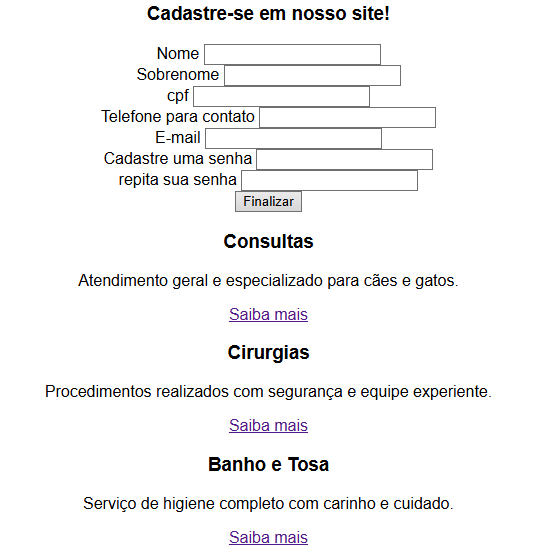
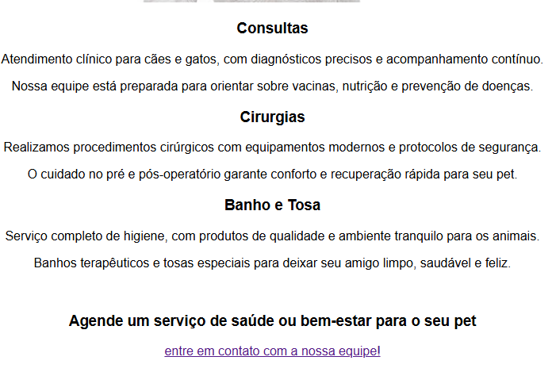
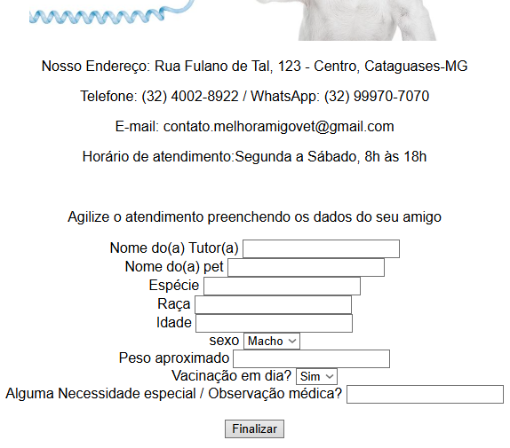
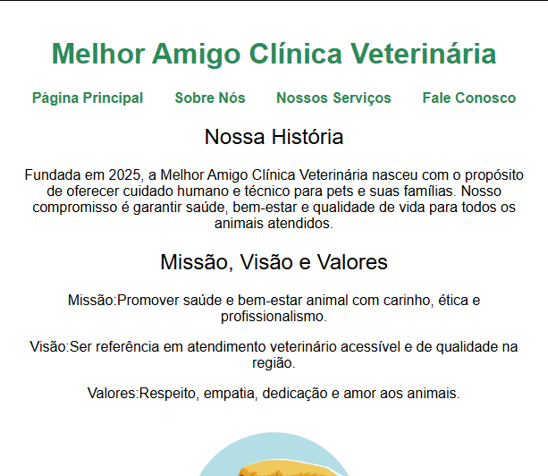

Conheca alguns dos meus trabalhos!
Melhor Amigo Clínica Veterinária
O site Melhor Amigo Clínica Veterinária foi desenvolvido como um projeto de demonstração, com o objetivo de praticar e apresentar habilidades básicas em HTML, CSS e JavaScript por meio da criação de uma página institucional para uma clínica veterinária fictícia.
   